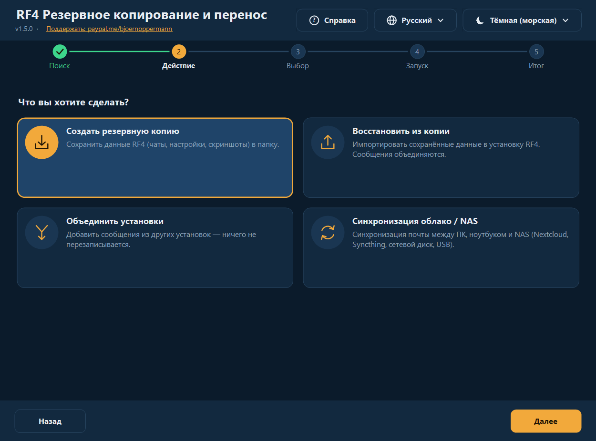
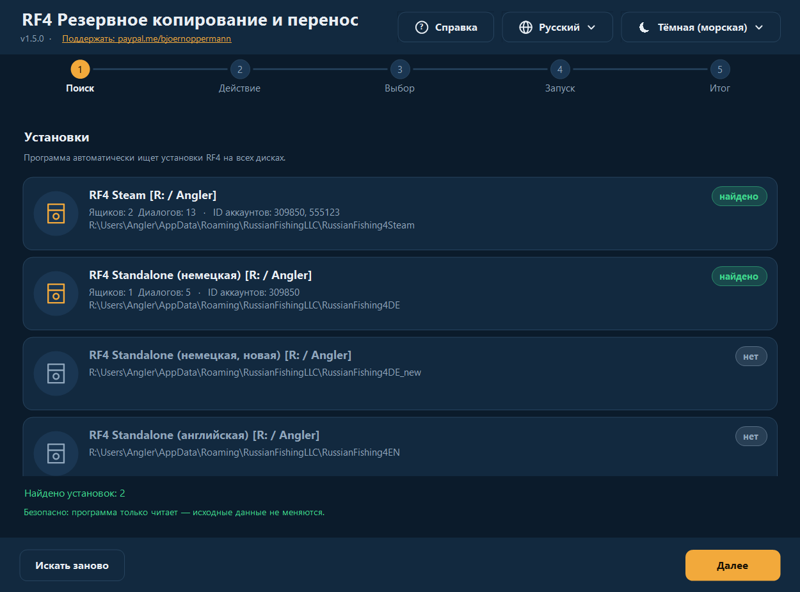
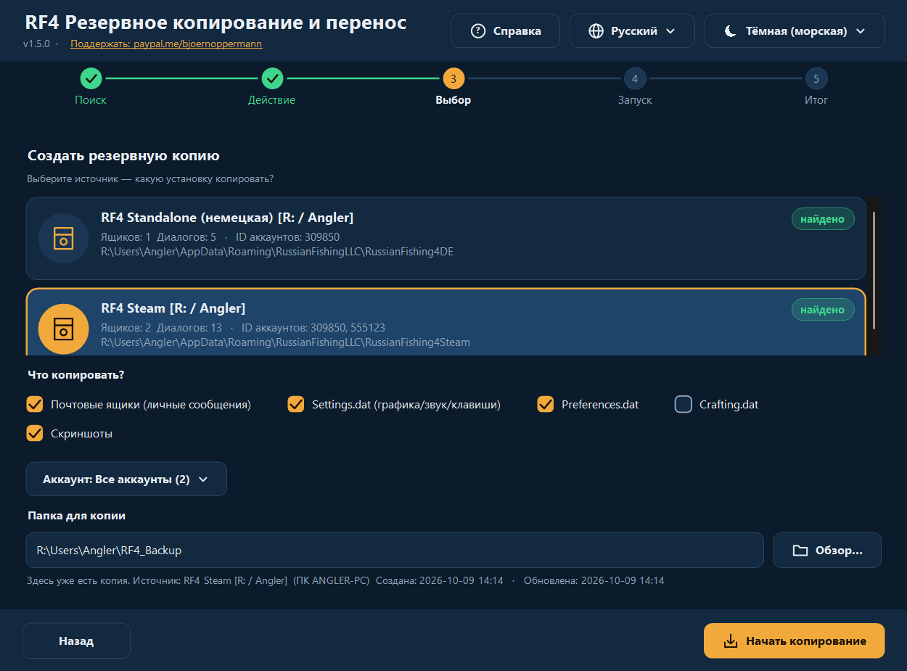
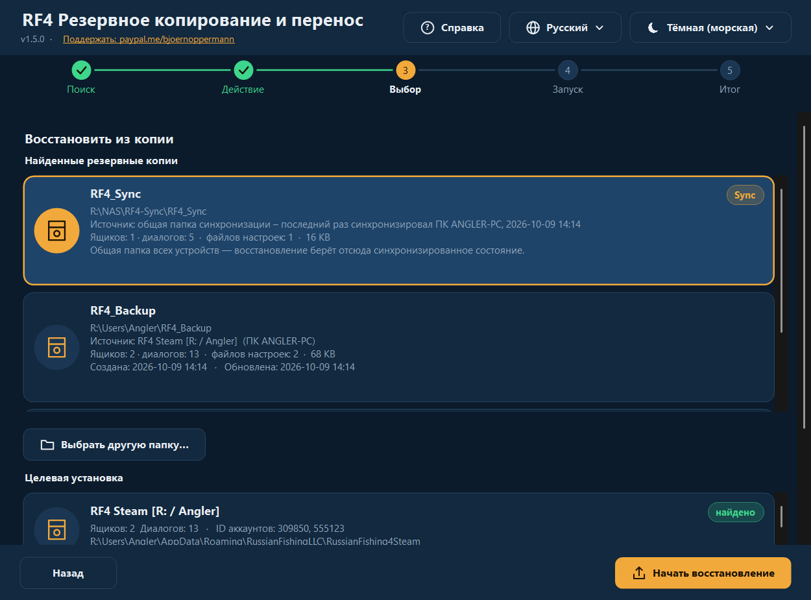
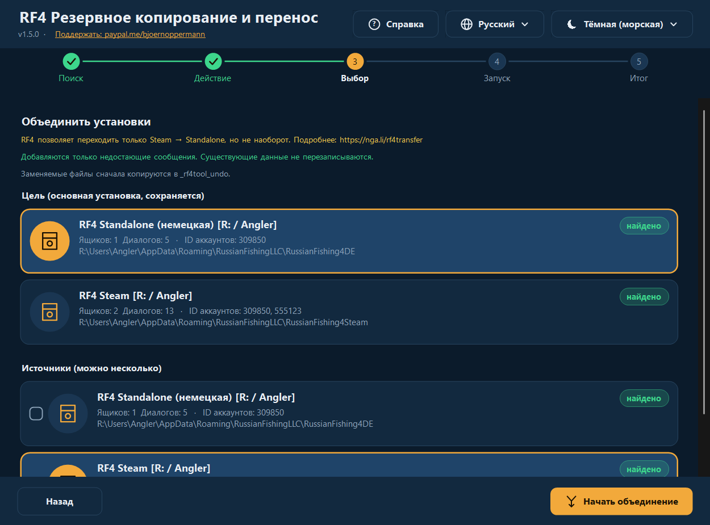
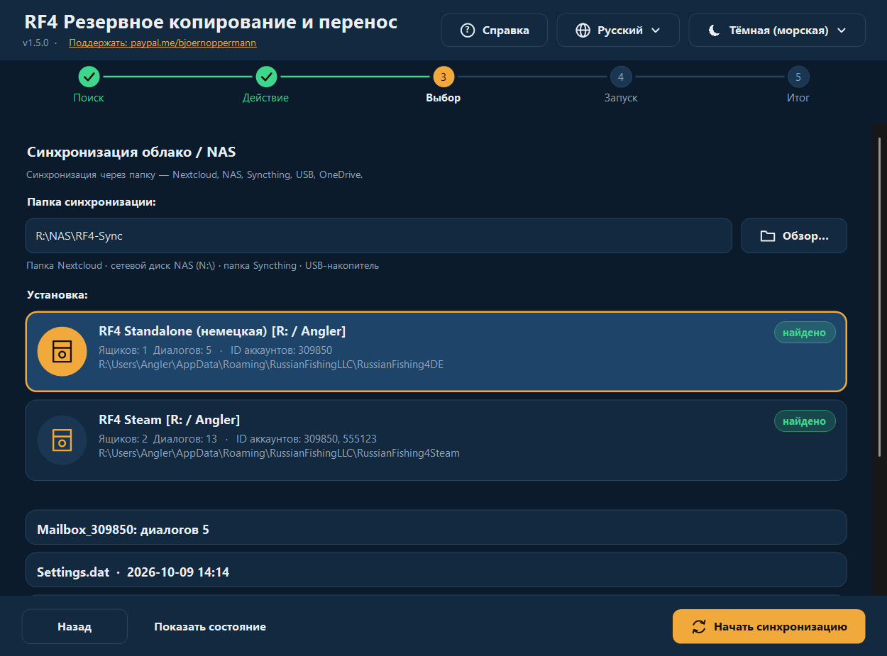
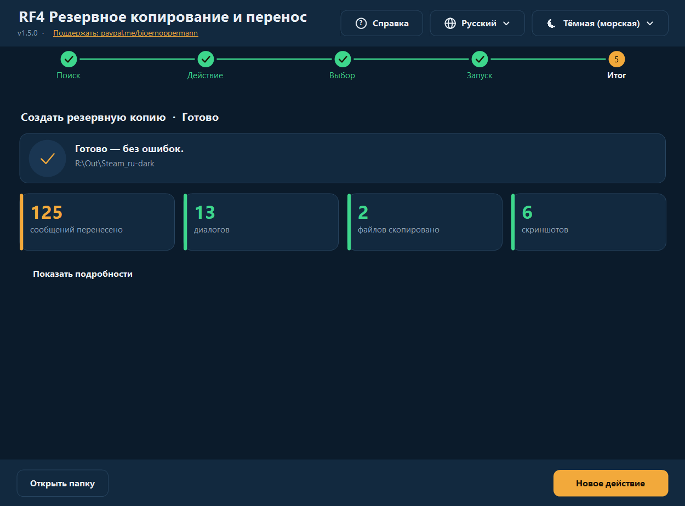
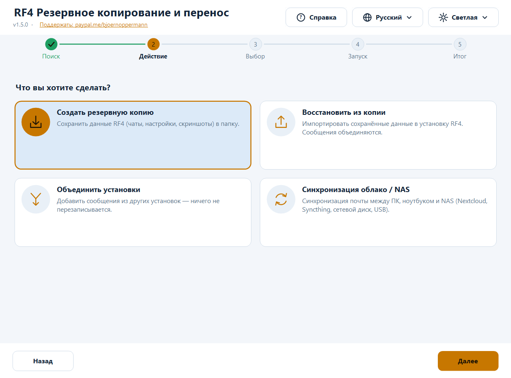
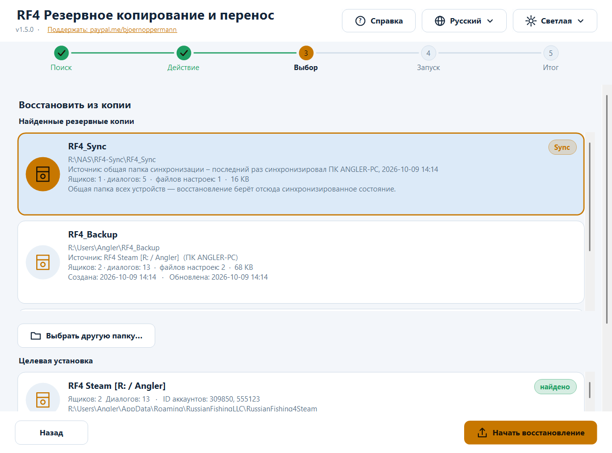
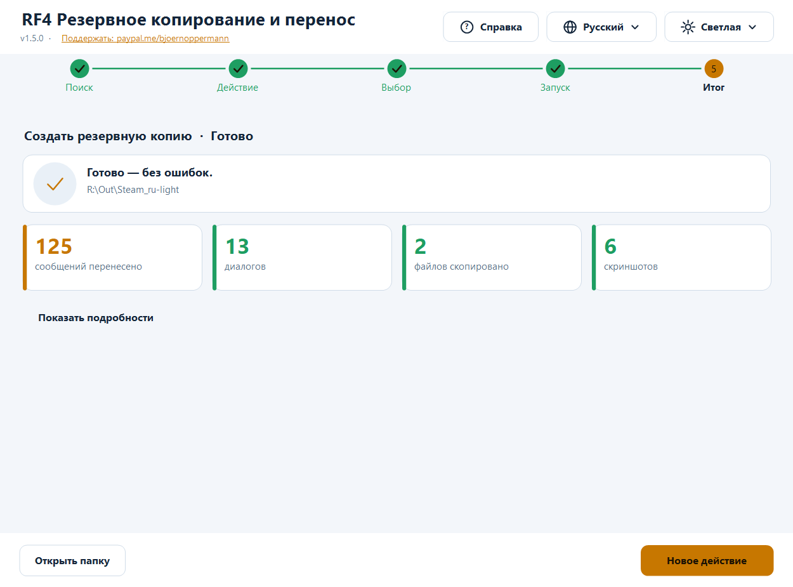

RF4 — Резервное копирование и перенос
Deutsch · English · 中文 · Русский
Бесплатная программа для резервного копирования, восстановления, объединения и синхронизации данных игрока Russian Fishing 4: игровая почта (чаты), настройки и скриншоты. Для Windows (графический интерфейс + терминал, PowerShell) и Linux/macOS (bash).
- 🌍 Четыре языка, полное переключение в любой момент: Deutsch · English · 中文 · Русский — новые языки добавляются обычным текстовым файлом
- 🎨 Тёмная и светлая тема автоматически (по настройке Windows или вручную) — новые темы тоже текстовым файлом
- 🖥️ Чёткое изображение при любом масштабе (100 % … 200 %, несколько мониторов)
- 🛡️ Ничего не удаляется. Заменяемые файлы сначала копируются в папку отмены
- 🔍 Автоматически находит Standalone, Steam, Wine, Proton, других пользователей и другие диски
- 📍 Каждая копия знает, из какой установки и когда она создана; восстановление работает и из папки синхронизации / с NAS
- ❓ Кнопка справки открывает это руководство (со скриншотами) на языке программы

📄 Руководство и блог: nga.li/rf4b · 📥 Загрузка: nga.li/rf4dl · 💻 Исходный код: nga.li/rf4git
Содержание
- Быстрый старт
- Установка
- Графический интерфейс
- Программа для терминала
- Возможности подробно
- Языки и темы (свои тоже)
- Где лежат данные
- Безопасность и проверка
- Частые вопросы и устранение неполадок
- Удаление
- Настройки, переменные окружения
- Разработка, тесты, сборка
- История изменений
Быстрый старт
Переезд на новый ПК или переустановка в три шага:
- Старый ПК: запустите программу → Создать резервную копию → выберите источник → Начать копирование.
- Перенесите папку копии (по умолчанию
Users\<имя>\RF4_Backup) на новый ПК: флешка, NAS или облако. Запустите там RF4 один раз и закройте. - Новый ПК: запустите программу → Восстановить из копии → выберите копию в списке → выберите целевую установку → Начать восстановление.
Прогресс, инвентарь и снасти хранятся на серверах RF4 и на новом ПК появятся сами. Программа занимается тем, что лежит локально: чаты, настройки, скриншоты.
Установка
| Вариант | Для кого | Как |
|---|---|---|
Установщик (rf4sa-backup-full-setup-v1.5.0.exe) | Windows, рекомендуется | Двойной щелчок, далее, готово. Создаёт пункты меню «Пуск» (GUI, терминал, руководство со скриншотами, удаление) и страницу с кликабельными ссылками (пожертвование, блог, загрузка, исходный код). Права администратора не нужны. |
rf4sa-backup-gui-setup-v1.5.0.exe / rf4sa-backup-cli-setup-v1.5.0.exe | только GUI / только терминал | как выше |
| Без установки | Windows | ПКМ на rf4sa-backup-gui-v1.5.0.ps1 → Выполнить с помощью PowerShell |
| Linux / macOS | bash | bash rf4sa-backup-v1.5.0.sh (нужны bash ≥ 4 и python3) |
Во всех файлах программы версия указана в имени (rf4sa-backup-gui-v1.5.0.ps1, rf4sa-backup-v1.5.0.ps1, rf4sa-backup-v1.5.0.sh) — так же, как у установщиков. При обновлении установщик заменяет старые файлы. Требования для Windows: Windows PowerShell 5.1 (есть в Windows 10/11; для Windows 7 — WMF 5.1). Python в Windows не нужен.
Примечание «выполнение скриптов отключено»: при запуске правой кнопкой Windows автоматически задаёт политику выполнения для этого одного запуска. Если сообщение всё же появляется: powershell -ExecutionPolicy Bypass -File rf4sa-backup-gui-v1.5.0.ps1
Графический интерфейс
Пошаговое сопровождение с пятью этапами вверху: Поиск → Действие → Выбор → Запуск → Итог. Справа вверху всегда доступны Справка (❓), Язык (🌐) и Тема (☀/☾). Интерфейс переключается мгновенно, без перезапуска. Кнопка справки открывает это руководство офлайн в браузере — на языке, который сейчас выбран в программе, с подходящими скриншотами.
1. Поиск
Программа ищет все установки RF4: ваш пользователь, другие пользователи, все диски. Найденные отмечены, возможные (ещё не существующие) цели показаны серым. Список прокручивается (колесо мыши, в том числе прямо над записью).

2. Действие
Четыре карточки: создать копию · восстановить из копии · объединить установки · синхронизация облако/NAS.
3. Выбор
Создать копию: выберите источник, отметьте, что сохранять (почта, Settings.dat, Preferences.dat, Crafting.dat, скриншоты), при нескольких аккаунтах при желании только один, укажите папку назначения. Если там уже есть копия, появится подсказка с её источником и датой.

Восстановить из копии: вверху — все найденные копии с содержимым, размером, источником (из какой установки, с какого ПК) и датой (создана/обновлена), новые сверху. В списке: стандартная папка, ранее использованные папки и их подпапки, а также папка синхронизации (метка Sync). «Выбрать другую папку…» — копия из другого места (флешка, сетевой диск/NAS); можно выбрать и родительскую папку папки синхронизации (программа сама найдёт в ней RF4_Sync). Затем выберите целевую установку; всё, что есть в копии, отмечается автоматически.

Объединить: выберите цель (основную установку) и отметьте один или несколько источников. Добавляются только недостающие сообщения.

Синхронизация облако/NAS: укажите папку синхронизации (Nextcloud, Syncthing, диск NAS, USB …), выберите установку, Начать синхронизацию. «Показать состояние» перечисляет то, что уже лежит в папке синхронизации.

4./5. Запуск и итог
Во время работы индикатор показывает текущую строку. Затем вы видите ключевые цифры (перенесено сообщений, диалогов, скопировано файлов, скриншотов, пропущено, ошибок). «Показать подробности» раскрывает полный журнал; «Открыть папку» открывает цель в проводнике.

Светлая и тёмная тема
Тема: по умолчанию «Автоматически (как в Windows)» — переключите Windows между светлой и тёмной темой, и программа сразу последует за ней (даже во время работы). Можно выбрать фиксированную тему.



Язык: при первом запуске по языку Windows, иначе английский; выбор сохраняется. Клавиатура: Tab переключает между карточками/кнопками, Пробел/Enter выбирает. Мониторы с высоким разрешением: программа поддерживает DPI (Per-Monitor v2) — текст и значки рисуются нативно, а не растягиваются. При перемещении на другой монитор всё подстраивается.
Программа для терминала
powershell -ExecutionPolicy Bypass -File rf4sa-backup-v1.5.0.ps1 # язык автоматически
powershell -ExecutionPolicy Bypass -File rf4sa-backup-v1.5.0.ps1 -Lang zh # фиксированный: de | en | zh | ru | свой
╔════════════════════════════════════════════════════════════╗
║ RF4 Резервное копирование и перенос v1.5.0 ║
║ RF4: nga.li/rf4de · Blog: nga.li/rf4b ║
║ Поддержать: paypal.me/bjoernoppermann ║
╚════════════════════════════════════════════════════════════╝
[1] Сканировать – показать все установки
[2] Резервная копия – сохранить данные в папку
[3] Восстановить – импорт из резервной копии
[4] Объединить – слить установки
[5] Синхронизация – облако/NAS
[H] Справка / руководство
[L] Сменить язык (Русский)
[0] Выход
- Меню: введите номер. Множественный выбор: номера переключаются (
1 3 4или1,3),a— все,n— ничего,Enter— дальше,0— назад. - **
[H]** открывает руководство (HTML со скриншотами) на текущем языке программы. - Восстановление предлагает найденные копии списком (путь, источник, содержимое, дата; папка синхронизации помечена
[Sync]) или ручной ввод пути — UNC-пути вроде\\NAS\rf4\RF4_Syncтоже работают. - После каждого действия выводится сводка с ключевыми цифрами.
- Рамки и символы — Unicode, ровные и с 中文 (учитывается двойная ширина).
RF4_ASCII=1— чистый ASCII (для старых консолей/журналов). - Для 中文 используйте Windows Terminal (в классической консоли возможны квадраты — зависит от шрифта).
Linux / macOS:
bash rf4sa-backup-v1.5.0.sh # язык автоматически (LANG), или:
bash rf4sa-backup-v1.5.0.sh -l ru
Находятся: разделы Windows (/mnt/*, /run/media/*/*), префиксы Wine (~/.wine, ~/.local/share/wineprefixes/*, Lutris), Steam Proton (…/steamapps/compatdata/*, в том числе Flatpak). Те же меню, что и в Windows ([H] открывает руководство через xdg-open/open).
Возможности подробно
Что сохраняется?
| Элемент | Содержимое |
|---|---|
| Почта | игровые чаты (Mailbox_<ID аккаунта>\*.dat, JSON). Хранятся локально, не на серверах RF4. |
| Settings.dat | графика, звук, назначение клавиш |
| Preferences.dat | прочие настройки игры |
| Crafting.dat | данные крафта |
| Скриншоты | Документы\Russian Fishing 4\Screenshots (в том числе подпапки; существующие имена никогда не перезаписываются) |
Резервная копия
Копирует выбранное в папку назначения. Почта при этом объединяется, а не перезаписывается вслепую — копирование в уже существующую папку, таким образом, является инкрементным. Если файлы настроек отличаются, программа сначала спрашивает. В папке копии программа создаёт файл rf4-backup.info: источник (установка, вариант, имя ПК, пользователь), создана, обновлена и краткая история последних копирований. Позже в списке восстановления (GUI, терминал, bash) видно, откуда копия и насколько она свежая. Файл — обычный текст, читается на любой платформе.
Восстановление
Импортирует копию в установку (в том числе в пустую, новую). Сообщения объединяются, файлы настроек заменяются только после подтверждения. Программа предупреждает, если RF4 ещё запущена (учитывается только процесс игры rf4_x64/rf4_x32 — открытый лаунчер или установщик предупреждение не вызывают). Пожалуйста, сначала закройте игру, иначе при выходе она перезапишет ваши изменения.
Восстановление из папки синхронизации / NAS / сетевого диска:
- Настроенная папка синхронизации автоматически появляется в списке копий (метка Sync, источник: «последний раз синхронизировал ПК … в …») — просто щёлкните по ней.
- Или через «Выбрать другую папку…» перейдите туда: папка синхронизации, её родительская папка или папка копии. Программа сама распознаёт
RF4_Syncвнутри выбранной папки. - Сетевой диск должен быть подключён. Совет: буквы дисков действуют только в том сеансе Windows, где диск подключён — при «Запуск от имени администратора» или в других сеансах лучше использовать UNC-путь (
\\NAS\ресурс\…). - Если программа там ничего не находит, она говорит об этом прямо («копия не найдена, в подпапке RF4_Sync тоже»), а не завершается молча.
Объединение
Добавляет в целевую установку все недостающие сообщения:
- У каждого сообщения есть уникальный ID (
meta.id). Выполняется дедупликация по ID — ничего не дублируется. - Новые сообщения вставляются по времени (
meta.created). - Файл записывается только при реальных новых сообщениях. Запись идёт через временный файл, который заменяет оригинал только после успешной проверки чтением (JSON снова читается).
- Оригинал предварительно копируется в папку отмены.
Типичные случаи: Steam → Standalone, Steam → Steam (новый ПК), Standalone → Standalone, несколько старых установок → одна новая.
RF4 официально позволяет переход только Steam → Standalone, но не наоборот. Подробнее: nga.li/rf4transfer
Синхронизация облако / NAS
Двусторонняя, через общую папку (подпапка RF4_Sync):
- Локально → синхр.: новые сообщения сливаются в папку синхронизации.
- Синхр. → локально: новые сообщения из папки синхронизации (с других устройств) сливаются локально.
- Файлы настроек: побеждает более новый файл (по метке времени); при совпадении ничего не происходит.
Используйте одну и ту же папку на каждом устройстве. Работает с Nextcloud, Syncthing, OneDrive, сетевыми дисками (в том числе ресурсами OpenMediaVault/OMV), USB-накопителями. В RF4_Sync\.sync_log записано, какое устройство и когда синхронизировалось последним.
Папка отмены
При восстановлении, объединении и синхронизации каждый заменяемый файл сначала копируется в:
<установка>\_rf4tool_undo\<дата_время>\<папка>\<файл>
Чтобы отменить изменение, скопируйте файл обратно оттуда. Папка не мешает RF4; вы можете удалить её сами в любой момент. Программа её никогда не удаляет.
Языки и темы
Всё модульно: языки и темы — обычные текстовые файлы. Встроены четыре языка и две темы; остальные подхватываются при запуске автоматически — без пересборки.
Добавить свой язык
- Скопируйте шаблон [
examples/template.lang](examples/template.lang) в
%APPDATA%\rf4-backup\lang\pt.lang (или в папку lang\ рядом со скриптом; Linux: ~/.config/rf4-backup/lang/pt.lang).
- Вверху задайте
@code=ptи@name=Português, переведите текст справа от=. Недостающие строки автоматически берутся из английского — можно перевести лишь часть. - Перезапустите программу: язык появится в меню языков (а при совпадении с языком Windows выберется даже автоматически).
Плейсхолдеры {0}, {1} должны остаться в тексте (они заменяются именами/числами). Кодировка файла: UTF-8. Руководство (кнопка справки) есть на четырёх встроенных языках; для собственного языка открывается английская версия.
@code=pt
@name=Português
app_title=RF4 Cópia e Migração
menu_backup=Cópia – guardar dados
Добавить свою тему
Скопируйте шаблон [examples/template.theme](examples/template.theme) в %APPDATA%\rf4-backup\themes\<имя>.theme и измените цвета (#RRGGBB). @base=dark|light — какой режим Windows она замещает при «Автоматически». Незаданные цвета берутся из тёмной темы. Она появится в меню тем.
Встроенные
| Тема | Описание |
|---|---|
| Тёмная (морская) | глубокий морской синий, тёплый янтарный акцент |
| Светлая | светлый сине-серый, более тёмный янтарный (контраст проверен) |
Контрастность (текст/фон ≥ 7:1, кнопки ≥ 4,5:1) проверяется тестами.
Где лежат данные
%APPDATA%\RussianFishingLLC\<вариант>\Mailbox_<ID аккаунта>\*.dat чаты (JSON, UTF-8 с BOM)
%APPDATA%\RussianFishingLLC\<вариант>\Settings.dat | Preferences.dat | Crafting.dat
Документы\Russian Fishing 4\Screenshots
| Имя папки | Значение |
|---|---|
RussianFishing4DE | RF4 Standalone (немецкая) |
RussianFishing4DE_new | RF4 Standalone (немецкая, новая) |
RussianFishing4EN | RF4 Standalone (английская) |
RussianFishing4Steam | RF4 Steam |
| (любая другая папка там) | определяется автоматически |
В Linux тот же путь находится внутри соответствующего префикса Wine/Proton (…/drive_c/users/<имя>/AppData/Roaming/RussianFishingLLC/…).
Сама программа хранит (только настройки, не игровые данные): %APPDATA%\rf4-backup\settings.json (язык, тема, папка синхронизации, недавние папки копий) или ~/.config/rf4-backup/settings.conf; при непредвиденных ошибках дополнительно error.log в той же папке.
Безопасность и проверка
- Ничего не удаляется — ни игровые данные, ни копии, ни папка отмены.
- Поиск и копирование только читают из установки.
- Записывающие действия (восстановление/объединение/синхронизация) заранее копируют заменяемые файлы в папку отмены; файлы сообщений записываются атомарно с проверкой чтением и только при реальных изменениях.
- Перед восстановлением/объединением/синхронизацией проверяется, не запущена ли RF4 (предупреждение).
- Непредвиденные ошибки не приводят к вылету: программа показывает сообщение и пишет подробности в
%APPDATA%\rf4-backup\error.log. - Нет доступа к сети (кроме того, что вы сами указали как папку синхронизации/копии), нет телеметрии. Исходный код полностью читаем (поставляемые файлы
.ps1/.shи есть код).
Контрольные суммы: см. CHECKSUMS.txt.
Get-FileHash .\rf4sa-backup-gui-v1.5.0.ps1 -Algorithm SHA256 # Windows
sha256sum rf4sa-backup-v1.5.0.sh # Linux
Перед первым запуском сравните хэш с CHECKSUMS.txt (или со значением на nga.li/rf4dl).
Частые вопросы и устранение неполадок
«Установка не найдена» RF4 должна быть запущена хотя бы один раз (тогда она создаёт папку данных). Проверьте, что есть %APPDATA%\RussianFishingLLC. Установки на других дисках находятся, если там есть папка Users; иначе при восстановлении укажите путь вручную.
Моей копии нет в списке В списке — стандартная папка RF4_Backup, ранее использованные папки, папка синхронизации и по одному уровню ниже. Папка считается копией, если в ней есть папки Mailbox_*, один из файлов .dat или папка Screenshots. Для других мест используйте «Выбрать другую папку…».
Восстановление с NAS / из папки синхронизации не получается Проверьте, что диск подключён и доступен (проводник). При запуске «от имени администратора» программа не видит сетевые диски обычного сеанса — используйте UNC-путь. Выберите саму папку синхронизации, её родительскую папку или запись с меткой Sync из списка. Если сообщение «копия не найдена» остаётся, в папке (пока) нет данных Mailbox_*: сначала выполните синхронизацию с одного из устройств.
После восстановления нет чатов При импорте RF4 должна быть закрыта. Импортируйте снова (безопасно повторять) или верните файлы из папки отмены. Проверьте ID аккаунта: чаты лежат под ID вашего аккаунта (Mailbox_<ID>).
Появляется предупреждение «RF4 запущена», хотя открыт только лаунчер Такого больше быть не должно: учитываются только rf4_x64/rf4_x32. Если оно всё же появляется, игра ещё работает в фоне (диспетчер задач).
Список показывает не все записи Он прокручивается: колесом мыши (в том числе прямо над записью) или полосой справа. Окно можно увеличить.
«Невозможно выполнить скрипт» powershell -ExecutionPolicy Bypass -File <файл>; для скачанных файлов, возможно, ПКМ → Свойства → Разблокировать.
В терминале 中文 / Русский показывается квадратами Используйте Windows Terminal или шрифт с CJK/кириллицей. GUI это не затрагивает.
GUI слишком большой для моего экрана Начальный размер подстраивается под экран; размер окна можно менять, при нехватке места содержимое прокручивается.
Steam Cloud перезаписывает файлы? Возможно в Steam-установках, если для RF4 включён Steam Cloud. После восстановления запустите Steam офлайн или временно отключите облако для игры.
**Linux: нет python3** sudo apt install python3 (Debian/Ubuntu). Python нужен только для слияния JSON-файлов.
Удаление
- Вариант с установщиком: меню «Пуск» → RF4 Backup Tool → Удалить RF4 Backup Tool (или Параметры Windows → Приложения). Удаляются только файлы программы; вас спросят, удалять ли сохранённые настройки (язык, тема, папка синхронизации, ваши файлы языков/тем). Игровые данные RF4 и ваши копии не затрагиваются никогда.
- Без установщика: просто удалите файлы. По желанию — папку
%APPDATA%\rf4-backup(Linux:~/.config/rf4-backup).
Настройки, переменные окружения
| Переменная | Действие |
|---|---|
RF4_LANG=xx | задать язык (de, en, zh, ru или свой) |
RF4_ASCII=1 | терминал: чистый ASCII |
RF4_BACKUP_DIRS=a;b (Linux: a:b) | дополнительные папки для поиска копий |
RF4_SCAN_USERS=a;b (Linux: a:b) | дополнительные папки «Users» для поиска установок |
RF4_NO_DRIVE_SCAN=1 | не искать на всех дисках |
RF4_THEME_BASE=dark|light | принудительно задать режим Windows для «Автоматически» (тесты) |
RF4_GUI_SCALE=1.5 | принудительно задать масштаб GUI (тесты/скриншоты) |
RF4_FAKE_RUNNING=rf4_x64 | имитировать запущенную игру (тесты) |
Разработка, тесты, сборка
Исходный код лежит в src/:
| Файл | Содержимое |
|---|---|
core.ps1 | общая логика (поиск, объединение, копирование/восстановление, синхронизация, поиск копий, информация о копии, статистика, настройки, загрузка языков/тем, открытие справки) |
lang/*.lang | все тексты (один файл на язык) |
themes/*.theme | цвета (один файл на тему) |
ui.cs | самостоятельно рисуемые элементы GUI (кнопки, карточки, индикатор, шаги …), с поддержкой DPI |
gui.ps1, cli.ps1 | интерфейсы |
cli.sh | скрипт для Linux/macOS |
build.ps1 собирает из них поставляемые файлы с версией в имени (языки, темы и C#-код встраиваются; таблица языков для bash генерируется из файлов .lang — один источник для всех платформ), а также руководство в HTML (docs/guide.<язык>.html, из четырёх README, со скриншотами).
powershell -ExecutionPolicy Bypass -File build.ps1
powershell -ExecutionPolicy Bypass -File tests\Test-Core.ps1 [-RealDataDir <папка почты>] # логика, языки/темы, контраст, объединение, синхронизация, информация о копии
powershell -ExecutionPolicy Bypass -File tests\Test-Cli.ps1 # терминал: все языки, ширина рамок, сценарии
powershell -STA -ExecutionPolicy Bypass -File tests\Test-Gui.ps1 # GUI: панели × тема × язык × масштаб, переполнение, диалоги, колесо мыши
powershell -STA -ExecutionPolicy Bypass -File tests\Test-RealFlow.ps1 # все функции с настоящими диалогами на фиктивных установках в реальном профиле
bash tests/test-sh.sh # скрипт для Linux
powershell -STA -ExecutionPolicy Bypass -File tools\make-screenshots.ps1 # скриншоты для руководства (на каждом языке, демо-данные)
Безопасное тестирование с реалистичными данными: tools\fake-installs.ps1 -Create создаёт из реальной установки фиктивные RussianFishing4TEST_A/_B/_C (пересекающиеся диалоги, второй аккаунт, отличающиеся настройки); -Remove удаляет только папки с файлом-маркером. Оригиналы никогда не изменяются.
Новый текст: добавьте ключ во все src/lang/*.lang (тесты проверяют, что каждый ключ есть в каждом встроенном языке и плейсхолдеры совпадают; поможет tools\add-lang-keys.ps1), затем build.ps1. Изменения в руководстве: вносите одинаково во все четыре README (те же разделы/рисунки), затем build.ps1 и tools\make-screenshots.ps1. Установщик: installer/*.iss собирается в Inno Setup 6 (ISCC.exe installer\rf4sa-backup-full.iss).
История изменений
1.5.0
- Новый интерфейс: полностью перерисован, чёткий при любом DPI, тёмная/светлая тема автоматически по Windows, меню справки/языка/темы в шапке, карточки вместо списков, шаги, индикатор, итог с ключевыми цифрами. Окно журнала внизу убрано (подробности раскрываются).
- Найденные копии перечисляются при восстановлении (GUI, терминал, bash) с источником и датой (
rf4-backup.info); использованные папки запоминаются. Восстановление из папки синхронизации/NAS работает из списка или через (родительскую) папку. - Справка на языке программы: кнопка справки (GUI),
[H](терминал/bash) и меню «Пуск» открывают руководство в HTML со скриншотами, соответствующими языку; все четыре языковые версии имеют одинаковое содержание. - Модульность: языки как
lang/*.lang, темы какthemes/*.theme— собственные файлы подхватываются автоматически. - Файлы с версией в имени (
rf4sa-backup-gui-v1.5.0.ps1…); установщик заменяет старые файлы. - Установщик: пункты меню «Пуск», включая руководство и удаление, кликабельные ссылки, вопрос о сохранённых настройках при удалении.
- Исправления: диалог сообщения (например, «RF4 запущена») падал с ошибкой .NET и прерывал восстановление/объединение/синхронизацию; открытый лаунчер ошибочно вызывал предупреждение; колесо мыши не прокручивало списки; родительская папка папки синхронизации не распознавалась при восстановлении.
- Терминал и bash: рамки/символы (с учётом ширины CJK), цветная сводка, ASCII-вариант.
- Более 380 автоматических проверок (логика, терминал, GUI, прогон на реальных данных с настоящими диалогами, Linux), включая проверку контрастности тем.
1.4.0 общее ядро, полный перевод (DE/EN/ZH/RU), исправления (собственная установка никогда не находилась, сбои с отдельными файлами, скриншоты при восстановлении), папка отмены, предупреждение при запущенной RF4. 1.3.0 i18n (только меню), установщики Inno Setup · 1.2.0 синхронизация облако/NAS · 1.1.x ID аккаунтов, объединение из нескольких источников · 1.0.0 первый выпуск
Ссылки и лицензия
| RF4 официально (DE / EN) | nga.li/rf4de · nga.li/rf4en |
| RF4 в Steam | nga.li/rf4steam |
| Перенос Steam → Standalone | nga.li/rf4transfer |
| Форум | nga.li/rf4forum |
| Статья и руководство | nga.li/rf4b |
| Исходный код (Codeberg) | codeberg.org/Natural78/rf4-backup-tool |
Лицензия MIT — свободно использовать, изменять и распространять. Если инструмент вам нравится: paypal.me/bjoernoppermann ☕